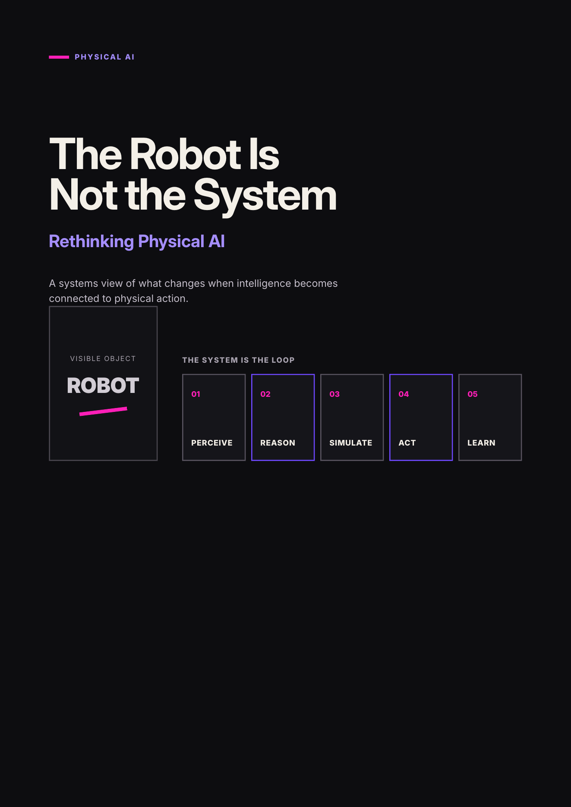

The Robot Is Not the System.
Physical AI has a branding problem: everyone keeps showing us a humanoid. The interesting part is the system underneath.

Read the full article.
The designed edition develops the systems view behind the project: the physical intelligence loop, the friction introduced by reality, simulation as part of intelligence, distributed edge-to-cloud architecture, orchestration, safety, lifecycle operations and Physical AI as an operating architecture.
Beyond the robot
Robots are the most visible embodiment of Physical AI, but they are only one part of it. The system also has to sense, interpret, plan, simulate, execute, learn, coordinate infrastructure, survive failures, remain secure and integrate into real operational environments.
Thinking in terms of a complete operating architecture changes the question from “what can this robot do?” to “what would make this capability reliable, scalable and governable in the real world?”
The loop
Simulation matters because physical mistakes are expensive. Edge intelligence matters because the cloud is not the brain. Orchestration matters because a production deployment is almost never one robot. And lifecycle engineering matters because a deployed physical system has to remain observable, updateable and reliable over time.
- Perception and multimodal understanding
- Reasoning, planning and world models
- Simulation and digital twins
- Control and actuation
- Edge, cloud and connectivity
- Fleet orchestration and lifecycle operations
- Safety, cybersecurity and human authority
Bionics Physical AI
The Robot Is Not the System looked outward at the architecture around intelligent machines. The next research thread looks inward at the body itself.
What if intelligence is not only in the model? What if some of it sits in morphology, materials, living tissue, peripheral sensing — or in the nervous system connected to the machine?
The completed five-part series moves from biological inspiration and morphological computation through biohybrid machines, neural interfaces and robotic bodies that keep adapting after deployment.
Explore Bionics Physical AI